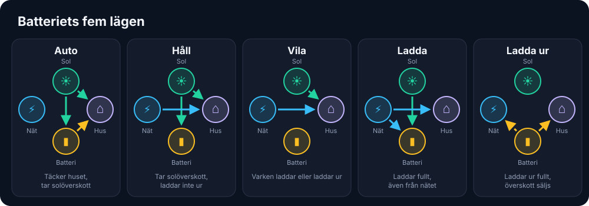
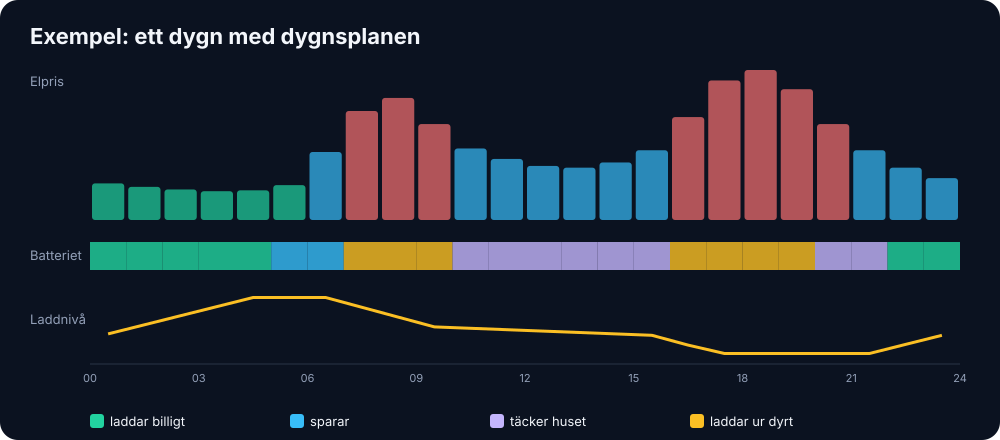
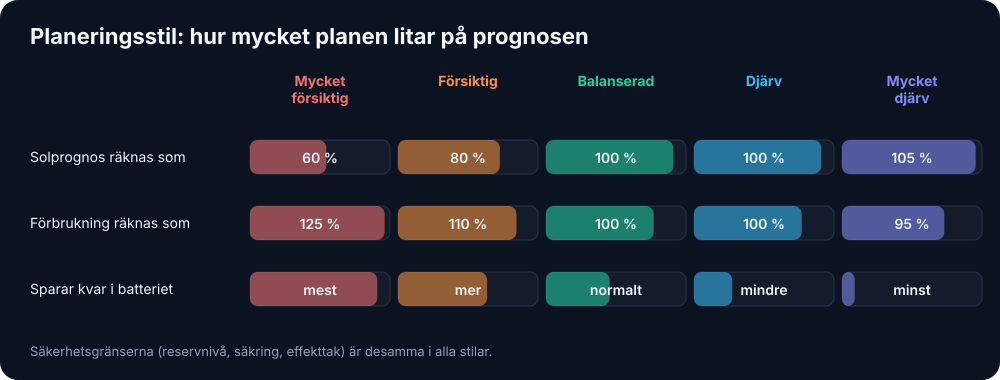
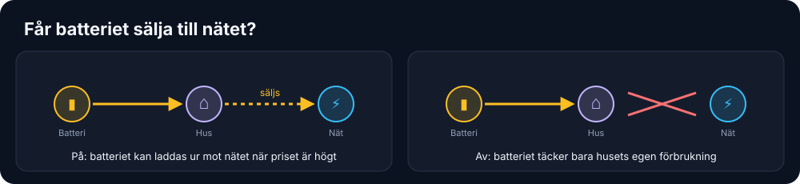

Har du ett husbatteri?
EnergyWizard kan styra ett husbatteri som en del av hela huset, inte som en egen ö. Batteriet konkurrerar med elbilen, värmepumpen, spabadet och exporten om samma watt. Därför fattas besluten i samma motor som styr allt annat: hur elbilen laddar, effekttaket, huvudsäkringen, elpriset och solöverskottet. Allt styrs via batteriets egen Home Assistant-integration, utan egen protokollkod.
Status: byggt och testat med simulerade anrop, men ännu aldrig kört mot ett riktigt batteri. Har du ett? Hör av dig - det är precis det vi behöver.
Tre lägen
| Läge | Vad händer |
|---|---|
samarbete (standard) | Ett annat system styr batteriet, till exempel växelriktarens egen BESS eller Predbat. EnergyWizard läser batteriet, visar det och räknar med det, men skriver aldrig dit. |
styr | EnergyWizard väljer batteriets läge enligt reglerna nedan. |
av | Batteriet ignoreras. |
Batteriets fem lägen
När EnergyWizard styr väljer det kvart för kvart ett av fem lägen. Batteriets egna lägesnamn (till exempel "Self Use" eller "Force Charge") kopplas till de här fem:

Vilka batterier kan styras?
| Batteri / integration i Home Assistant | Läser | Styr |
|---|---|---|
| Solax Gen4-6 (Solax Modbus) | ✅ | ✅ alla fem lägen |
| Growatt (Solax Modbus) | ✅ | ✅ auto, håll, ladda, ladda ur |
| FoxESS lokalt (foxess_modbus) | ✅ | ✅ auto, håll, ladda, ladda ur + effekt |
| Solis hybrid, t.ex. S6-EH3P (solis_modbus), med BYD, Dyness, Pylontech m.fl. | ✅ | ✅ auto, ladda, ladda ur + effekt |
| Fronius Gen24 (fronius_modbus), t.ex. med BYD HVS | ✅ | ✅ alla utom vila + effekt |
| FoxESS via molnet (foxess-ha) | ✅ | auto och håll |
| Felicity Solar (ha_felicity) | ✅ | nej, integrationens egen styrning sköter det (se nedan) |
| SolarEdge, GivEnergy, Huawei Luna, Sonnen, Victron, Pylontech m.fl. | ✅ | om du kopplar lägena själv (exempel längst ner) |
Allt utom läsningen är byggt mot integrationernas källkod och ännu inte kört mot ett riktigt batteri.
Reglerna (i prioritetsordning)
- Gammal data: svarar inte batteriet eller elmätaren tar växelriktaren över (auto).
- Säkringen överbelastas: batteriet laddar ur för att avlasta huvudsäkringen.
- Effekttaket är nått: batteriet täcker toppen.
- Minuspris: batteriet laddar från nätet.
- Elbilen laddar från nätet: batteriet håller - det töms inte i bilen.
- Elbilen solladdar: över din prioritetsnivå får bilen solöverskottet före batteriet.
- Reservnivå: under den sparas batteriet till strömavbrott.
- Dygnsplanen: när den räknats fram bestämmer den resten (se nedan).
- Utan plan - billig timme med dyrare kvar: batteriet sparas till de dyra timmarna.
- Annars: växelriktarens självförbrukning.
Dygnsplanen
Var femtonde minut räknar EnergyWizard fram den billigaste planen för resten av dygnet och morgondagen - kvart för kvart: när batteriet ska ladda, sparas, laddas ur eller bara täcka huset. Planen tar hänsyn till elpriset (fullt köppris och vad du får för såld el), husets förväntade förbrukning, solprognosen, elbilens laddplan (batteriet töms aldrig i bilen), batteriets verkningsgrad, reservnivån och hur snabbt det kan ladda. Den undviker att byta läge i onödan, och energi som blir kvar vid planens slut räknas försiktigt så att batteriet används när det lönar sig i stället för att hamstras.
Planen syns i Planen framåt ("Batteriet laddar 01:00-03:45"), som ett eget band i tidslinjen och i "Just nu" med hur mycket den beräknas spara mot ren självförbrukning. Säkerhetsreglerna ovan går alltid före planen.
Varje beslut syns med sin förklaring i "Just nu" på översikten och i appen.

Planeringsstil
Under Inställningar → Batteri väljer du hur mycket planen ska lita på sol- och förbrukningsprognosen, i fem steg från Mycket försiktig till Mycket djärv. En försiktig plan räknar med mindre sol och mer förbrukning än prognosen och sparar mer i batteriet till senare. En djärv plan tror på prognosen och använder batteriet mer, vilket tjänar mest när prognosen stämmer. Balanserad är standard.

Reservnivån, säkringsskyddet och effekttaket gäller likadant i alla stilar. Stilen ändrar bara hur planen räknar, aldrig säkerheten.
Får batteriet sälja till nätet?
Med Tillåt batteriet att sälja till nätet påslaget (standard) kan planen ladda ur mot nätet när priset är så högt att det lönar sig efter förluster och slitage. Stänger du av det täcker batteriet bara husets egen förbrukning. Det kan vara klokt om ditt elavtal ger lite betalt för såld el eller om elnätsbolaget tar ut en avgift för inmatning.

Säkerhet
- Batteriet återgår till växelriktarens eget läge när EnergyWizard startar och när det stängs av (till exempel vid en uppdatering), så det aldrig blir kvar i "ladda ur" utan att någon styr det.
- Lägesbyten sker högst var femte minut (säkerhetsreglerna undantagna), eftersom växelriktare sparar läget i flashminne.
- Saknar batteriet ett läge används närmaste säkra i stället (vila → håll → auto).
Planen lär sig ditt batteri
Slitage räknas med. Varje urladdad kWh kostar batteriet en bit av sin livslängd -
som standard 0,30 kr/kWh (cycle_cost; räkna cellernas pris / (kapacitet × antal cykler)).
Planen laddar därför bara ur när prisskillnaden täcker både förluster och slitage, och varje
lägesbyte kostar också lite, så batteriet inte växlar fram och tillbaka i onödan.
Ur historiken lär sig EnergyWizard batteriets verkliga verkningsgrad, användbara kapacitet och faktiska maxeffekt, och hur mycket solprognosen brukar slå fel timme för timme hos just dig, och husets förbrukning per veckodag och timme (medianen de senaste fyra veckorna - effektvakten använder en försiktigare 85:e percentil, men för planering ger medianen en ärligare förväntan). Planen använder det inlärda, men bara när det finns tillräckligt med data och värdena är fysiskt rimliga - annars gäller det du skrivit i inställningarna. Varje dag räknas också ut vad batteriet faktiskt sparade igår: vad elen hade kostat utan batteriet minus vad den kostade.
Solax Modbus (Solax och Growatt)
Kör du Solax Modbus behöver du inte byta integration. Entitetsväljaren känner igen den och fyller i lägena själv:
- Solax (Gen4-6): "Charger Use Mode" + "Manual Mode Select" - Self Use, Back Up, Force Charge, Force Discharge och Stop.
- Growatt: "Time 1 Mode" (Load First, Battery First, Grid First) + knappen "Time 1 Update", som trycks efter varje byte. Ställ in Time 1 till 00:00-23:59 och Aktiv en gång i HA. För att ladda från nätet måste AC-laddning vara påslagen i växelriktaren.
Lägesnamnen kommer från integrationens egen källkod. Det är ännu inte kört mot ett riktigt batteri - hör av dig om du testar!
FoxESS
- Lokalt (rekommenderas): nathanmarlor/foxess_modbus via LAN eller RS485. Slå på fjärrstyrningen ("remote control") i integrationens inställningar. Då får "Work Mode" lägena Force Charge och Force Discharge, och entitetsväljaren fyller i Self Use, Back-up och effektreglagen (i kW, som EnergyWizard räknar om till själv). Fungerar med H1, H3, H3 Pro, H3 Smart och KH.
- Via molnet: macxq/foxess-ha ger bara lägena Self-Use och Backup. FoxESS Cloud har en daglig gräns för antal anrop, och EnergyWizard byter läge högst var femte minut. Laddning från nätet styrs inte den vägen.
- StealthChesnut/HA-FoxESS-Modbus
kan bara läsa (batterinivå, effekt, sol). Den räcker för
samarbete.
En FoxESS-laddbox (t.ex. A7300P/L07P) styrs via OCPP, som andra OCPP-laddare.
Solis (med BYD, Dyness m.fl.)
Med Pho3niX90/solis_modbus (S6-EH1P, S6-EH3P och andra hybrider) fyller entitetsväljaren i styrningen själv: rullgardinen RC Force Charge/Discharge och effektreglagen i watt. Batteriet bakom (BYD HVS, Dyness, Pylontech …) styrs alltid via växelriktaren. En egen BYD-integration kan visa celldata, men den laddar inte batteriet.
- Auto sätter tillbaka
None, så växelriktaren kör det läge du själv valt i Storage Mode. EnergyWizard ändrar aldrig Storage Mode. - Solis fjärrstyrning släpper efter en tidsgräns (RC Timeout, standard 5 minuter). EnergyWizard skriver därför om kommandot var tredje minut medan det laddar eller laddar ur. Stannar EnergyWizard går växelriktaren själv tillbaka till sitt eget läge.
- Solis har inget rent "håll"-läge, så planen använder auto där. Inte provat mot en riktig växelriktare än.
Fronius Gen24 med BYD HVS
Med redpomodoro/fronius_modbus fyller entitetsväljaren i Storage Control Mode: Auto, Block Discharging (håll), Charge from Grid och Discharge to Grid, plus effekten i watt. Slå på Modbus i växelriktarens webbsida och tillåt styrning. Den inbyggda Fronius-integrationen kan bara läsa.
BYD-batteriet laddas alltid via växelriktaren. Integrationerna bbr111/byd_hvs och redpomodoro/byd_battery_box ger bra avläsning (laddnivå, celler, temperaturer) men styr inget. Har du både en BYD-integration och Solis eller Fronius väljer entitetsväljaren växelriktaren, eftersom det är den som kan styra.
Felicity Solar
Kör du partach/ha_felicity (T-REX 5K, 6K, 10K, 25K och 50K
via Modbus) känner entitetsväljaren igen batteriet och föreslår laddnivå och effekt, men bara för
avläsning. Integrationen har en egen prisstyrning (EMS) för batteriet, och om två system styr samma
batteri slåss de. Dessutom skriver integrationens val "Backup mode" i själva verket Economic mode till
T-REX 5/10K, så EnergyWizard kan inte välja läge säkert den vägen. Låt därför ha_felicity sköta
batteriet. EnergyWizard ser det, räknar med det i effektvakten och planen för resten av huset, och skriver
aldrig dit.
Visar effekten minus när batteriet laddar? Lägg till power_invert: true under
battery:, så vänds tecknet.
Så ställer du in det
Entitetsväljaren hittar batteriet och skriver control: samarbete som säker start.
För styr anger du vilket av batteriets egna lägen som motsvarar varje avsikt - exakt
de alternativ din select-entitet visar i Home Assistant:
battery:
enabled: true
driver: generic
capacity_kwh: 10
control: styr # samarbete | styr | av
reserve_soc: 20 # sparas alltid till strömavbrott
priority_soc: 50 # över detta får elbilen solen först
max_power_w: 5000 # batteriets max laddeffekt (för planen)
cycle_cost: 0.30 # slitage, kr per urladdad kWh
plan: true # dygnsplan (false = bara reglerna)
plan_style: balanced # very_careful | careful | balanced | bold | very_bold
allow_export: true # false = batteriet täcker bara huset
power_invert: false # true om effektsensorn visar + vid urladdning
entities:
soc: sensor.batteri_soc
power: sensor.batteri_effekt # + = laddar
mode_select: select.batteriets_lage
discharge_power: number.urladdningseffekt # valfri
modes:
auto: "Self-use"
hold: "..."
idle: "..."
charge: "..."
discharge: "..."Låt Predbat se EnergyWizards planerade elbilsladdning
EnergyWizard publicerar sin laddplan för elbilen som sensorn
sensor.smartbox_planerad_last i Home Assistant. Attributet
predbat har exakt det format Predbats load_forecast läser
(tidsstämplar med stigande kWh, kontrollerat mot Predbats källkod). Då planerar Predbat
batteriet med vetskap om att bilen ska ladda 11 kW kl 02-05, istället för att bli
överraskad. Lägg till i Predbats apps.yaml:
load_forecast:
- sensor.smartbox_planerad_last$predbatUndvik dubbelräkning: Predbats egen prognos bygger på husets
historiska last, och den innehåller redan tidigare elbilsladdning. Slå därför på
Predbats car_charging_hold och peka car_charging_energy på
laddarens energisensor, så att elbilen räknas bort ur historiken och bara kommer
tillbaka via EnergyWizards plan. Bara elbilen ingår: värmepumpen och spabadet styrs minut
för minut och har ingen plan framåt att publicera. Overifierat mot en riktig
Predbat-installation, så hör gärna av dig om du provar.